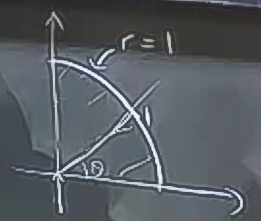
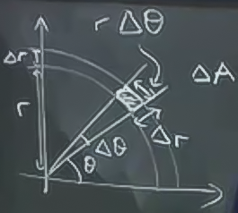
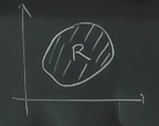
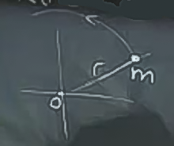
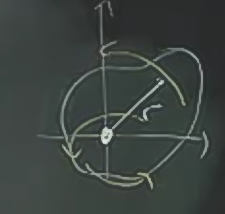
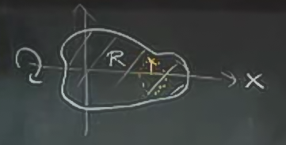
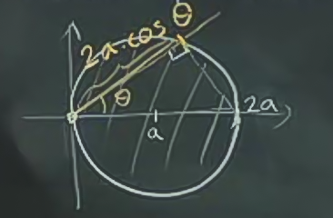

Ders 17
Önceki derste
$$ \int \int (1-x^2-y^2) \mathrm{d} A $$
$$ x^2+y^2 \le 1 $$
$$ x,y \ge 0 $$
entegralini hesapladık, fakat kullandığımız yöntem biraz karmaşıklığa yol açtı. Daha iyi bir yöntem kutupsal forma geçmektir.
Hatırlarsak $x,y$ kordinat sisteminde çift entegral için entegrasyon alanını yatay, dikey şekilde parçalara ayırmıştık, $dA = \mathrm{d} y \mathrm{d} x$ haline gelmişti. Kutupsal formda
$$ \int \int ... \mathrm{d} r \mathrm{d} \theta$$
şeklinde bir form olur, önce $r$ üzerinden entegrasyon en kolayı. Bu demektir ki $\theta$'yi sabitleriz, ve $r$ üzerinde hareket ederiz.

Birim disk örneğinde bu hareket basit, $r=0$'dan başlanır, ve 1 değerine gelinceye kadar hareket edilir. $\theta$ için 0'dan başlanır, üstteki alana göre, $\pi/2$'ya gelinceye kadar hareket edilir. Sınırlar şöyle olur:
$$ \int_0^{\pi/2} \int_0^1 ... \mathrm{d} r \mathrm{d} \theta$$
Fakat, dikkat, bu önemli bir nokta, $dA$ büyüklüğü $\mathrm{d} r \mathrm{d} \theta$'ya eşit değildir.

Üstteki resimdeki içi karalanmış ufak dikdörtgeni düşünelim, dikdörtgenin kenarlarından biri biraz eğimlidir (çemberin parçası olduğu için) fakat kenarlar küçüldükçe bu ufak alan dikdörtgen olarak görülebilir. Neyse, kenarların biri $\Delta r$ (bu kolay), diğeri? Öteki kenar $\Delta \theta$ değil, çünkü o kenar çemberin bir parçası, o zaman $r \Delta \theta$.
Bu demektir ki kenarları sonsuz küçülttüğümüz zamanda bile
$$ dA = r \mathrm{d} r \mathrm{d} \theta $$
olacak. Entegral
$$ \int_0^{\pi/2} \int_0^1 f \mathrm{d} r \mathrm{d} \theta$$
$$ f = (1-x^2-y^2)$$
Kutupsal forma tabii ki mekanik bir şekilde
$$ x = r\cos\theta $$
$$ y = r\sin\theta $$
eşitliklerini alıp $f$ içinde yerlerine koyabiliriz, fakat biraz dikkatli bakarsak $-x^2-y^2$ aslında $-(x^2+y^2)$ ve $r^2=x^2+y^2$ olduğuna göre, bunu kullanabiliriz
$$ f = 1-r^2 $$
Yani
$$ \int_0^{\pi/2} \int_0^1 1-r^2 \mathrm{d} r \mathrm{d} \theta$$
$$ \int_0^{\pi/2} \bigg[ \frac{r^2}{2} - \frac{r^4}{4} \bigg]_0^1 \mathrm{d} \theta$$
$$ \int_0^{\pi/2} \frac{1}{4} \mathrm{d} \theta = \frac{1}{4} \frac{\pi}{2} = \frac{\pi}{8} $$
Önceki derse göre daha kolay oldu.
Çift entegraller ne işe yarar?
Önceki derste çift entegralleri hacim hesaplama bağlamında işledik. Fakat hacim hesabı tek uygulama alanları değil, aynen tek değişkenli entegralin sadece alan hesaplamada kullanılmadığı gibi. Çift entegralleri belli bir bölgedeki fonksiyonları toplama olarak görmek daha iyi [1], belki bu fonksiyonun o bölgedeki ortalamasını hesaplamak istiyoruz, vs. Bazı kullanımları listeleyelim:
Uygulamalar
1) Belli bir bölge $R$'nin alanını hesaplamak.

Bazı durumlarda bu hesap tek entegral ile yapılabiliyor, ama çift entegral ile daha kolay. Şöyle
$$ Alan(R) = \int \int_R 1 \mathrm{d} A $$
Eğer çift entegralleri illa hacim olarak görmek istiyorsak, üstteki hesap yüksekliği 1, baz alanı $R$ olan bir "hacmi" hesaplıyor. Hacim = baz alan X yükseklik'tir, ama yükseklik 1 olduğu için, üstteki hesap aynı sadece baz alanın ne olduğunu hesaplar! Güzel bir cinlik değil mi?
Ya da, diyelim ki yassı / düz bir objenin kütlesini hesaplamak istiyoruz, ve yoğunluk $\delta = \textit{kütle} / \textit{birim alan}$ olarak verilmiş. Her ufak parça için kütle
$$ \Delta m = \delta \cdot \Delta A $$
Tüm kütleyi üstteki ufak kütleleri toplayarak elde edebiliriz.
$$ \int \int_R \delta \cdot \mathrm{d} A $$
Eğer yoğunluk objenin her noktasında aynıysa, $\delta$ değişkenini formülden çıkartabiliriz tabii, ama her $x,y$ noktasında değişme durumu var ise, üstteki entegral hesabı güzelce yapacaktır.
2) $R$ bölgesinde $f$'in ortalaması
Bir ortalama hesabını normalde, mesela belli sayılar için, nasıl yapacağımızı biliyoruz. Sayıları alıyoruz, toplamlarını kaç sayı olduğuyla bölüyoruz. Benzer şekilde, içinde olduğunuz odanın ortalama sıcaklığını hesaplamak istesek bir sürü noktada sıcaklık ölçümü alıp, onları toplayıp bölmemiz gerekir. Fakat bu sıcaklık ölçümü için potansiyel olarak sonsuz tane ölçüm olabilir. Bu hesabın matematiksel şekli ölçüm fonksiyonunu alan üzerinden entegre etmek, sonra alan büyüklüğüyle bölmektir.
Notasyon
$$ \textit{f'nin ortalaması} = \bar{f} $$
$$ \bar{f} = \frac{1}{Alan(R)} \int \int f \mathrm{d} A $$
2a) Üstteki ortalama birörnek (uniform) bir ortalama, her noktaya aynı önemi veriyoruz. Eğer bazı noktalara daha fazla ağırlık vermek istersek, ağırlıklı ortalama (weighted average) hesabı yapabiliriz.
$$ \textit{f'nin ağırlıklı ortalaması} = \frac{1}{\textrm{Kütle}(R)} \int \int_R f \ \delta \mathrm{d} A $$
Ağırlıklı ortalama kütle merkezi (center of mass) hesaplarında ise yarar. Belki bir objenin bazı tarafları diğerlerine göre daha ağır, bu objenin kütle merkez hesabı bunu hesaba katmalı.
2 Boyutta kütle merkezi $(\bar{x},\bar{y})$,
$$ \bar{x} = \frac{1}{\textrm{Kütle}} \int \int_R x \delta \mathrm{d} A $$
$$ \bar{y} = \frac{1}{\textrm{Kütle}} \int \int_R y \delta \mathrm{d} A $$
3) Dönme direnci (moment of intertia): Bu kavram bir objenin dönüşe karşı gösterdiği dirençtir, aynen itilmeye karşı direnişin kütle olduğu gibi. Bir objeyi ne kadar ileri fırlatabileceğim onun kütlesine bağlıdır, onu ne kadar döndürebileceğim dönme direncine bağlıdır.
DD hesabı için bir eksen tanımlanması gereklidir, çünkü "neyin etrafında dönüleceği" ancak bir eksene göre anlamlıdır. Hesap nasıl yapılır?
Ana fikir kinetik enerjiyi kullanmak. Eğer noktasal bir kütle $m$ hız $v$ ile hareket ediyorsa, kinetik enerji $1/2 mv^2$.
İtmek yerine kütleyi bir eksen etrafında $r$ uzaklıkta $\omega$ rotasyonel hızda dönecek şekilde hareket ettirirsem,

$$ \frac{1}{2}mv^2 = \frac{1}{2}mr^2\omega^2 $$
Dönme direncinin itilmeyle olan bağlantısı formülde gözüküyor, $m$ itilme formülünde $v^2$'in katsayısı. $mr^2$ ise $\omega^2$'nin katsayısı.
Fakat bu basit bir noktasal kütle için. Daha çetrefil bir objeyi döndürmek istiyorsak, bu objenin tüm DD'si objenin içindeki tüm noktasal DD'lerin toplamı olacaktır.
Yoğunluğu $\delta$ olan bir obje için
$$ \Delta m = \delta \Delta A $$
DD
$$ \Delta m r^2 = r^2 \delta \Delta A $$
Üstteki parçaları bir bölge üzerinden toplarsam, tüm DD'yi bulurum. Nihai formül
$$ I_0 = \int \int_R r^2 \delta \mathrm{d} A $$

Rotasyonel kinetik enerji $\frac{1}{2}I_0 \omega^2$
Peki diğer tür dönme hareketleri? Mesela objeyi $x$ ekseni etrafında da döndürebilirdim.

Hesap benzer kavramları kullanır, dönme eksenine olan uzaklık $r$ kullanılır. Üstteki resimde kırmızı noktayı ele alalım, uzaklığı kırmızı okla gösteriliyor. Bu uzaklık aslında $|y|$ değil midir? $r^2$ lazım, o zaman $y^2$ kullanırız.
$$ I_x = \int \int y^2 \delta \mathrm{d} A $$
Örnek
$a$ yarıçapındaki bir dışkı orijin etrafında döndürmek istiyoruz
Yoğunluk birörnek ve $\delta = 1$. Dönme direnci nedir?
$$ I_0 = \int \int r^2 \mathrm{d} A $$
$r$ ne? İnsanın içinden hemen $a$ demek gelebilir, ama değil. Unutmayalım, "her nokta" için DD hesaplıyoruz, yani disk içindeki her nokta dikkate alınmalı, ve bu noktaların hepsi $a$ uzaklığında değiller, uzaklıkları $\le a$.
Kutupsal kordinata geçmek iyi olur mu? Evet.
$$ = \int_0^{2\pi} \int_0^a r^2 r \mathrm{d} r \mathrm{d}\theta $$
$$ = 2\pi \frac{a^4}{4} = \frac{\pi a^4}{2} $$
Ya orijin yerine üstteki yeşil noktada etrafında döndürmek isteseydim? Hani frizbiyi alıp parmağınız etrafında döndürdüğünüzde olduğu gibi.
Bu hesap için iki seçenek var. Eğer kordinat sistemi olduğu gibi kalırsa, işler biraz zor. Ama sistemi değiştirip yeşil noktayı yeni orijin haline getirirsek, işler biraz daha kolay.
Formül yine aynı
$$ I_0 = \int \int r^2 r \mathrm{d} r \mathrm{d}\theta $$
Sınırlar nasıl hesaplanır?

[Yeni] orijinden $i\sin$ gönderdiğimizi düşünelim, bu ışınlar çemberden nerede dışarı çıkar? Yani işaretli yerin uzunluğu nedir? $2a \cos\theta$. Peki $\theta$ sınırları nedir? $-\pi$ ile $\pi$, yani $y$ ekseninin tamamen sağ tarafı. "Ama y ekseni üzerindeyken çembere girip çıkmıyoruz" düşüncesi akla gelebilir, fakat orada teğet halindeyiz, yani sınırlar doğru.
$$ I_0 = \int_{-\pi/2}^{\pi/2} \int_0^{2a \cos\theta} r^2 r \mathrm{d} r \mathrm{d}\theta $$
İç
$$ = \bigg[ \frac{r^4}{4} \bigg]_{0}^{2a \cos\theta} = 4a^4 \cos^4\theta $$
Dış
$$ I_0 = \int_{-\pi/2}^{\pi/2} 4a^4 \cos^4\theta \mathrm{d}\theta $$
Ders Notları 3B içinde bu formülün çabuk hesabı var. Sonuç
$$ = \frac{3}{2} \pi a^4 $$
Yani bir frizbiyi ortasından döndürmek yerine kenar noktası etrafında döndürmek 3 kat daha zor.
Kaynaklar
[1] Bu konu hakkında ek bölümdeki Entegralleri Nasıl Düşünelim yazısının okunması da tavsiye edilir.